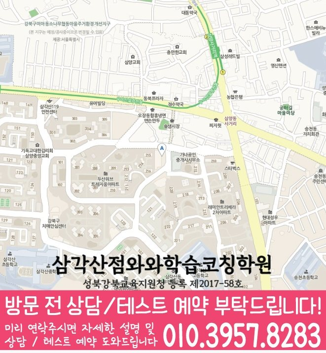

내신·학습습관 진단
내신 대비, 자기주도학습, 오답관리 중 지금 어디가 부족한지 먼저 나누어 확인합니다.
MIDDLE SCHOOL COACHING
서울 강북구 삼각산동 중학생을 위한 중학생학원 안내입니다. 내신 대비, 자기주도학습 진단, 오답 관리, 학년별 학습 우선순위를 상담 전에 확인할 수 있습니다.


와와학습코칭센터 삼각산점 기준으로 삼각산동 학생의 상담 범위를 확인합니다. 실제 방문·상담 전에는 주소와 이동 동선을 함께 확인해 주세요.
핵심 요약
삼각산동 학생에게 필요한 관리는 문제를 많이 푸는 것보다 지금 어느 단원, 어느 과목에서 막히는지 먼저 확인하는 것입니다.
내신 대비, 자기주도학습, 오답관리 중 지금 어디가 부족한지 먼저 나누어 확인합니다.
틀린 문제를 유형별로 정리해 같은 실수가 반복되지 않도록 관리합니다.
중1~중3 전환 시기마다 필요한 부분이 달라 학년에 맞춰 순서를 정합니다.
학원 선택 가이드
같은 실수를 반복하는 학생일수록 오답을 다시 채점하는 데서 끝내지 않고, 왜 틀렸는지 원인을 나누어 확인하는 과정이 필요합니다.
와와학습코칭센터 삼각산점은 서울 강북구 삼각산동 학생을 기준으로 상담을 진행하며, 삼각산중, 길음중, 미양중 학생들이 주로 문의합니다. 실제 등록 전에는 서울 강북구 미아동 811-9 두산위브테라스파크 상가 402/403호를 기준으로 이동 동선과 상담 가능 시간을 확인하는 것이 좋습니다.
중학생의 학습은 한 번에 완성되지 않습니다. 적응, 내신, 고등 준비를 거치며 조금씩 쌓아가는 과정이라는 점을 기억해 주세요.
AEO ANSWER
중학생인데 벌써 고등학교 준비를 해야 할지 고민되신다면?
무리한 선행보다 지금 과정의 완성도를 먼저 확인하고, 필요한 만큼만 단계적으로 준비하는 것을 권합니다.
초등학교 졸업을 앞두고 무엇이 걱정되시나요?
기초 개념 점검과 함께 중학교에서 필요한 학습 습관, 시간 관리 능력을 미리 준비하면 도움이 됩니다.
갑자기 공부 자체를 거부하는 중학생이라면?
학습량이나 난이도, 관계, 성적 부담 중 어떤 것이 원인인지 먼저 확인하고 실행 가능한 목표부터 다시 잡습니다.
공부에 자신감이 없어 보이는 아이라면?
학생이 해결할 수 있는 수준부터 시작해 작은 성취를 반복 경험하도록 돕는 것이 먼저입니다.
LOCAL & STUDENT FIT
삼각산동 생활권 학생의 학교 진도와 눈높이에 맞춰 중학생 학습 관리 방향을 상담합니다.
학년과 목표에 따라 적응, 내신, 고등 준비 중 시작 지점을 다르게 잡습니다.
중학교 첫 시험이 걱정되는 학생, 특정 과목만 유독 어려운 학생, 자기주도학습 습관이 약한 학생에게 적합합니다.
진학 전 초등학교: 길음초, 송천초, 미양초 · 중학교: 삼각산중, 길음중, 미양중
수업 가능 학교 참고
일반 학원과의 차이
일반적인 학원 운영 방식과 채움학습의 중학생 관리 방식을 같은 기준으로 비교했습니다.
CENTER INFO
서울 강북구 삼각산동 학생 상담 기준으로 안내합니다.
서울 강북구 미아동 811-9 두산위브테라스파크 상가 402/403호
성북강북교육지원청 등록 제2017-58호
TUITION
서울 지역 기준으로 안내되는 학습료입니다. 실제 금액은 상담 시 학생 과정과 교육청 신고 기준에 따라 확인해 주세요.
서울 지역 기준 · 1회 90~100분 수업
| 횟수 | 초등 | 중등 | 고등 |
|---|---|---|---|
| 주 3회 | 249,000원 | 266,000원 | 299,000원 |
| 주 4회 | 319,000원 | 341,000원 | 384,000원 |
| 주 5회 | 389,000원 | 416,000원 | 469,000원 |
* 학습료는 지역, 수업 조건, 교육청 신고 기준에 따라 일부 차이가 있을 수 있습니다.
CHECKLIST
학원, 과외, 학습지 등 지금 어떻게 공부하고 있는지 확인합니다.
지금까지 틀린 문제를 어떻게 다시 봐왔는지 여쭤봅니다.
현재 자유학기제 기간인지에 따라 학습 관리 방향이 달라질 수 있습니다.
편하신 상담 요일을 미리 알려주시면 일정 조율이 쉽습니다.
FAQ
사전 예약 후 상담실과 강의실 등 시설을 둘러보실 수 있습니다.
개념 부족, 문제 해석, 시간 관리 또는 실수 등 원인을 분석하여 학습 방법을 조정합니다.
교과서, 학교 프린트, 시험 범위와 출제 경향을 바탕으로 학교별 대비를 진행합니다.
학교별 시험 범위에 맞춰 개념 정리, 예상 문제, 서술형 연습과 실전 테스트를 진행합니다.
시험 직전에 몰아서 공부하기보다 평소 진도와 복습을 유지하며 범위가 확정되면 집중적으로 대비합니다.
학생의 관심 분야와 학습 상황을 바탕으로 과목별 목표와 진로 탐색 방향을 안내합니다.
PARENT REVIEW
중간·기말 시험 기간엔 확실히 더 집중적으로 챙겨주십니다.
한때 공부를 거부했던 아이인데 지금은 스스로 앉아서 공부합니다.
고등학교 진학까지 미리 방향을 잡아주셔서 든든합니다.
서술형 문제에 자신감이 많이 생겼습니다.
자유학기제 기간을 알차게 활용할 수 있도록 도와주셨습니다.
학원에 다니면서 아이와 공부 문제로 다투는 일이 줄었습니다.
근처 학원페이지
같은 지역의 다른 카테고리와, 가까운 지역 페이지로 이동할 수 있도록 정리했습니다.